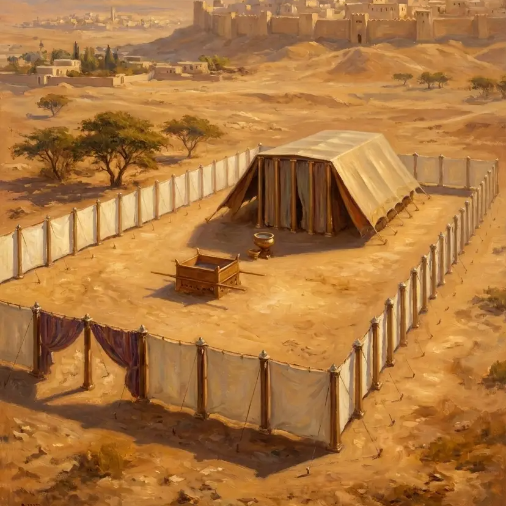

TABERNÁCULO AR

Y harán un santuario en mi honor, y yo habitaré en medio de ellos.
Este proyecto titulado "Tabernáculo AR" es un esfuerzo de Kolorion Studio para llevar las enseñanzas de la biblia como una parábola didáctica y realista para. Creemos que la biblia y las profecías, con sus símbolos y realidades puedes ser entendidas por todos: niños y adultos.
Aquí encontraras enlaces para poder ver cada uno de los muebles del Santuario en "Realidad Aumentada" (desde ahora le llamaremos AR) de forma gratuita y usarlos para instruir y enseñar a escala natural como eran los muebles del santuario. ¿Como puedes hacerlo?
¿Cómo puedes hacerlo?
Es muy sencillo solo necesitas un smartphone android o iphone y seguir estos sencillos pasos:
- Colócate en una zona amplia donde poder usar la aplicación con un piso solido.
- Abre alguno de los enlaces listados en esta página
- Entraras en una pagina donde deberás esperar que el modelo 3d se cargue, algunos son livianos y otros son mas pesados. Aproximadamente se bajaran 25MB (como máximo) de cada modelo.
- Busca debajo de ellos el botón "Ver en mi espacio AR" y presionalo con esto se abrirá tu cámara (algunas veces puede pedirte tu permiso).
- Apunta tu cámara a un lugar de suelo (alguna veces deberás presionar sobre el modelo otros smartphone se coloca automáticamente).
- Disfruta podrás ver el mueble del Tabernáculo del Desierto y verlo a través de tu smartphone, podrás acercarte y girar alrededor de él.
Listado de muebles en AR
Altar de bronce de los Holocaustos
Mesa de los panes de la proposición
Nuevos contenidos más adelante
Esta es nuestra primera versión y es gratuita. Nuestro objetivo es presentar nuestro proyecto a la comunidad mundial adventista y así encontrar financiamiento (patrocinio) regular para a futuro realizar un tabernáculo mucho más completo con todos los vasos y espacios del santuario y con explicaciones en AR detallada de cada uno de ellos y sus símbolos ademas de cortas animaciones. En cada en la parte inferior encontrara enlace para ayudarnos y dar patrocinio. Pedimos que puedan compartir con otros hermanos.
Si quieres apoyarnos puedes patrocinarnos mensualmente por medio de https://patreon.com/kolorionstudio o pago único con tarjeta debito/credito.
© KolorionTV. Prohibida su reproducción.